Instale o Mega Brain
em 9 etapas simples
Você nunca abriu um terminal na vida? Tudo bem. Este guia foi feito exatamente pra isso. Em 9 etapas simples, você vai instalar o Mega Brain no seu computador -- mesmo sem saber nada de programação. Cada passo tem explicação, verificação e ajuda pra caso algo dê errado. Você não vai ficar perdido.
35-50 minutos no totalAntes de começar
Você vai precisar de pelo menos 2GB livres no disco.
Como as peças se conectam
- 1 Claude ProO cérebro da IA
- 2 VS CodeSua bancada de trabalho
- 3 Node.jsO motor que roda tudo
- 4 PythonFerramenta de apoio
- 5 Mega BrainDownload e instalação
- 6 API KeysSuas chaves de acesso
- 7 ConfiguraçãoConectar todas as peças
- 8 ValidaçãoTestar se tudo funciona
- 9 GitHubBônus opcional
O Mega Brain é como uma orquestra. Nas próximas etapas, vamos montar cada peça.
Suas 9 etapas
- 1 Assinatura Claude Seu acesso à inteligência artificial ~5 min
- 2 VS Code + Claude Code Seu ambiente de trabalho ~8 min
- 3 Instalar Node.js O motor que roda tudo ~5 min
- 4 Instalar Python Os instrumentos de IA ~5 min
- 5 Baixar o Mega Brain Trazer o projeto para seu computador ~5 min
- 6 Obter API Keys Suas chaves de acesso ~8 min
- 7 Configurar o Mega Brain Juntar todas as peças ~5 min
- 8 Validação Confirmar que tudo funciona ~4 min
- 9 GitHub (bônus) Salvar seu progresso na nuvem ~5 min
Etapa 1: Assinatura Claude
O Claude é a inteligência artificial que faz o Mega Brain funcionar. Sem uma assinatura ativa, o sistema não tem como processar seus materiais de conhecimento.
Funciona para uso normal do Mega Brain. Tem limites mensais de uso -- bom para começar e testar o sistema. Consulte os valores em claude.com/pricing.
Recomendado para uso intenso. Sem limites de uso mensal -- ideal se você usa o pipeline todo dia. Consulte os valores em claude.com/pricing.
Acesse o site do Claude para criar sua conta e escolher seu plano:
Acessar claude.aiPasso a passo
- Acesse claude.ai
- Clique em "Start for free"
- Crie sua conta com email ou Google
- Escolha o plano Pro ou Max
- Confirme o pagamento
Como verificar
Acesse claude.ai e você deve ver seu painel com conversas. Se ver a tela de login, sua conta ainda não está ativa.
Não recebi o email de confirmação
- Verifique a pasta de spam ou lixo eletrônico
- Espere até 5 minutos -- alguns provedores demoram
- Se não chegar, tente criar a conta com outro email (Gmail costuma funcionar melhor)
- Tente o login com Google diretamente, que não precisa de confirmação por email
Erro no pagamento
- A Anthropic aceita cartões internacionais. Confira se seu cartão tem compras internacionais habilitadas
- Se o cartão for recusado, tente um cartão virtual (Nubank, Wise ou Inter funcionam)
- Verifique se o endereço de cobrança está preenchido corretamente
- Alguns bancos bloqueiam a primeira tentativa por segurança -- tente novamente após aprovar a notificação do banco
Etapa 2: VS Code + Claude Code
1. Baixar e instalar o VS Code
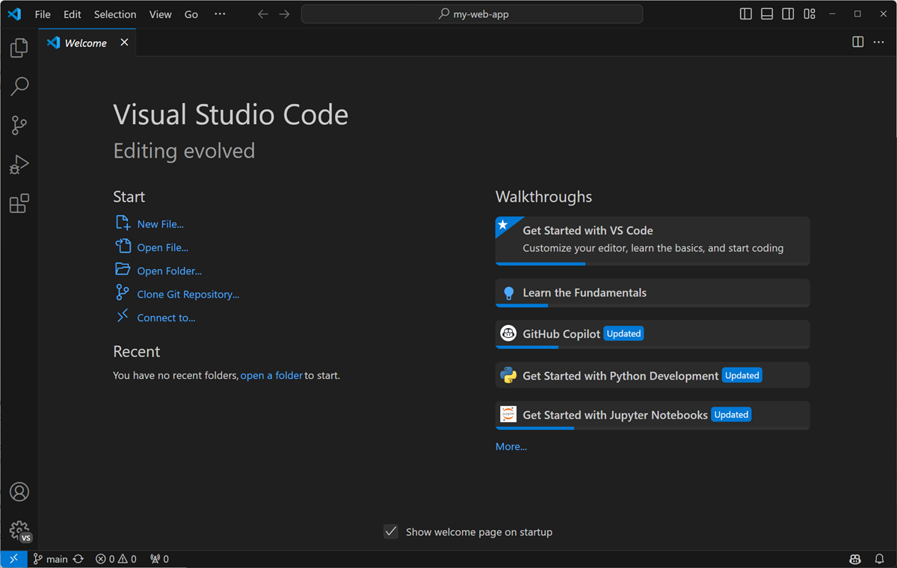
2. Instalar a extensão Claude Code
A extensão Claude Code conecta o VS Code com a inteligência artificial que você contratou na etapa anterior. É por meio dela que o Mega Brain funciona.
- Abra o VS Code
- Clique no ícone de Extensions na barra lateral esquerda (ou pressione Ctrl+Shift+X)
- Na caixa de busca, digite "Claude Code"
- Clique no resultado "Claude Code" publicado pela Anthropic
- Clique em "Install"
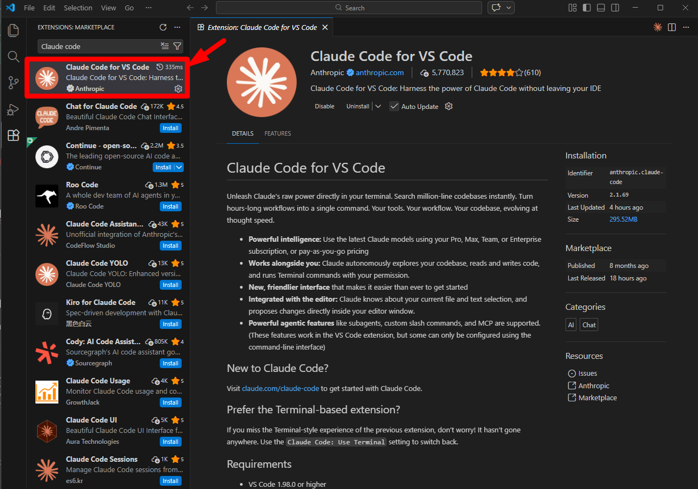
3. Fazer login na extensão
Após instalar, o VS Code vai pedir pra você fazer login com sua conta Claude. Clique em "Sign in with Claude" e autorize o acesso.
Como verificar
Abra o terminal do VS Code (Ctrl+`) e digite:
claude
Claude Code é mostrado no terminal e pede seu primeiro prompt.
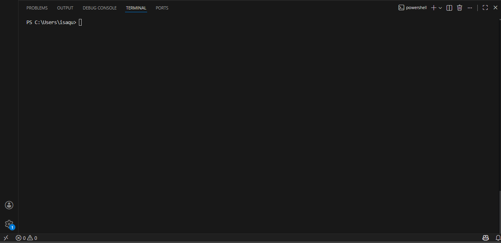
Não encontrei a extensão Claude Code
- Verifique se você está na versão mais recente do VS Code (menu Help > Check for Updates)
- Confira se digitou exatamente "Claude Code" na busca (sem espaço extra)
- Procure pela extensão publicada pela Anthropic -- ignore resultados de outros publicadores
A extensão instalou mas não aparece no VS Code
- Feche o VS Code completamente
- Abra novamente
- Verifique se a extensão aparece na lista de extensões instaladas (ícone de Extensions na barra lateral)
O VS Code não abriu o terminal com Ctrl+`
- O atalho pode variar dependendo do teclado. Tente o menu View > Terminal
- No Mac, o atalho é Cmd+` (Command + crase)
- Se nenhum atalho funcionar, use o menu Terminal > New Terminal
Instalar Node.js
O Node.js é o motor que executa o Mega Brain. Pense nele como o motor de um carro -- você não vê, mas sem ele nada anda.
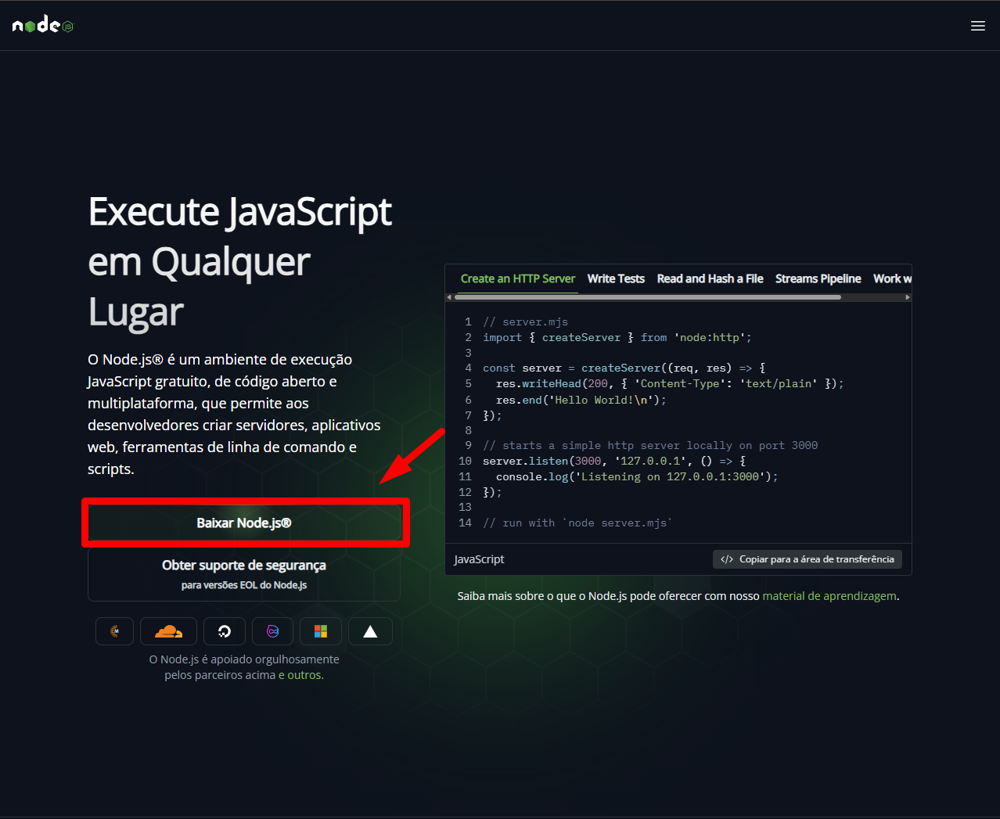
Como verificar
Abra o terminal do VS Code (Ctrl+`) e digite:
node --version
Deve mostrar uma versão 18 ou maior, como v20.11.0
Se deu certo
Se aparecer isso
'node' não reconhecido
Feche e reabra o VS Code completamente. Se ainda assim não funcionar, reinicie o computador e tente novamente.
Versão antiga do Node (menor que 18)
Desinstale a versão atual pelo Painel de Controle (Windows) ou via Terminal (Mac), depois instale a versão LTS mais recente.
Instalar Python
O Python executa os scripts de inteligência artificial do Mega Brain. É ele que faz a mágica acontecer nos bastidores.
Na primeira tela do instalador, lá embaixo, tem um checkbox escrito "Add python.exe to PATH". Esse checkbox vem DESMARCADO.
Você precisa MARCAR ele antes de clicar em "Install Now".
Se instalar sem marcar, o Python fica instalado mas o seu computador não sabe onde encontrar ele. Aí nada funciona.
(Se já instalou sem marcar: desinstale, e instale de novo marcando o checkbox desta vez. Não tem problema.)
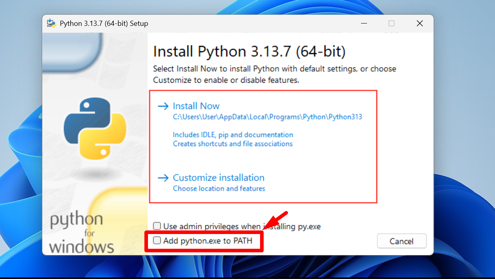
Como verificar
Abra o terminal do VS Code (Ctrl+`) e digite:
python --version
No Mac, tente python3 --version se python não funcionar
Deve mostrar Python 3.10.x ou maior
Se deu certo
Se aparecer isso
Se apareceu a versão (3.10 ou maior), está perfeito! Se apareceu erro, veja 'Problemas Comuns' abaixo.
'python' não é reconhecido
Isso significa que o PATH não foi configurado. Desinstale o Python, instale novamente e desta vez MARQUE o checkbox 'Add to PATH' na primeira tela.
Aparece versão 2.x
Você tem uma versão antiga. Tente digitar python3 --version. Se funcionar, use python3 em vez de python nos próximos passos.
Instalação pede permissão de administrador
Clique com botão direito no instalador e selecione 'Executar como administrador'.
Etapa 5: Baixar o Mega Brain
- Etapa 1: Assinatura Claude
- Etapa 2: VS Code + Claude Code
- Etapa 3: Node.js instalado
- Etapa 4: Python instalado
O Windows não vem com Git instalado. Antes de continuar, vamos verificar se você já tem.
Abra o terminal do VS Code (Ctrl+`) e digite:
git --version
Se mostrou uma versão
Se aparecer isso
Se mostrou uma versão (ex: git version 2.40.0): você já tem Git. Pode pular este bloco.
Se apareceu erro ('git' não reconhecido): siga os passos abaixo para instalar.
- Acesse git-scm.com/downloads
- Baixe o instalador para Windows
- Execute o instalador com Next-Next-Finish em tudo. Não mude nenhuma opção.
- Feche e reabra o VS Code
- Tente
git --versionnovamente -- agora deve funcionar
Você não precisa de conta no GitHub para baixar o Mega Brain. O repositorio é público e qualquer pessoa pode fazer o download.
Abra o terminal do VS Code (Ctrl+`) e cole este comando:
O comando git clone copia o projeto inteiro para o seu computador:
git clone https://github.com/thiagofinch/mega-brain.git
Aguarde o download completar -- você verá mensagens de progresso no terminal. Quando terminar, o terminal vai voltar para o prompt normal.
Abrir a pasta no VS Code
Agora abra a pasta no VS Code:
- Clique em File no menu superior
- Selecione Open Folder
- Navegue até encontrar a pasta mega-brain
- Clique em Open (ou Selecionar Pasta no Windows)
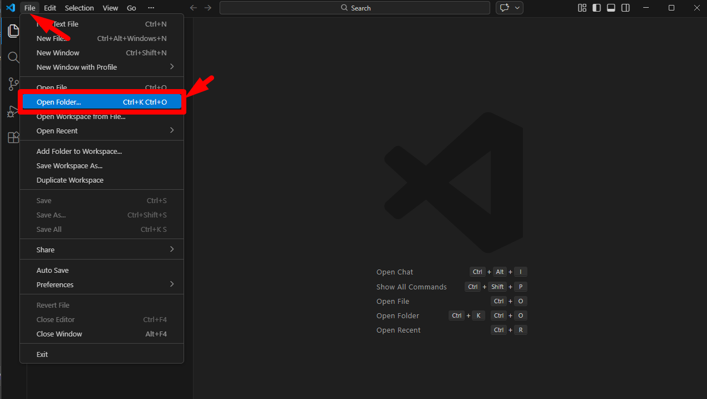
Como verificar
O VS Code vai mostrar os arquivos do Mega Brain no Explorer (painel esquerdo). Você deve ver pastas como src, docs, e arquivos como package.json.
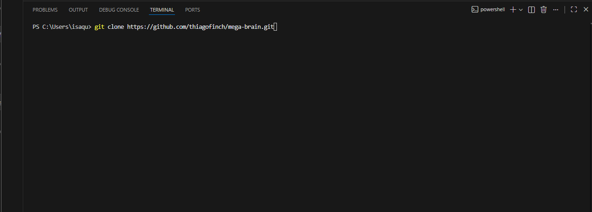
Se deu certo
Se aparecer isso
'git' não reconhecido
Siga os passos do bloco PRE-REQUISITO: Git acima para instalar o Git.
Demora muito / travou
Verifique sua conexão com internet. Tente cancelar (Ctrl+C) e rodar o comando novamente.
Permission denied
Tente fechar e reabrir o VS Code como administrador.
Etapa 6: Obter suas Chaves de Acesso (API Keys)
- Etapa 5: Mega Brain baixado
Uma API Key é como a senha do Wi-Fi da sua casa. Sem ela, o Mega Brain não conecta na inteligência artificial. Você vai precisar de duas chaves: uma da Anthropic (para o Claude, a IA principal) e uma da OpenAI (para o Whisper, que transcreve áudios).
Chave 1: Anthropic (Claude)
- Acesse console.anthropic.com
- Crie uma conta ou faça login
- No menu lateral, clique em API Keys
- Clique em Create Key
- Digite um nome para a chave (ex: 'mega-brain')
- Copie a chave gerada e guarde em um lugar seguro -- ela NÃO vai aparecer novamente
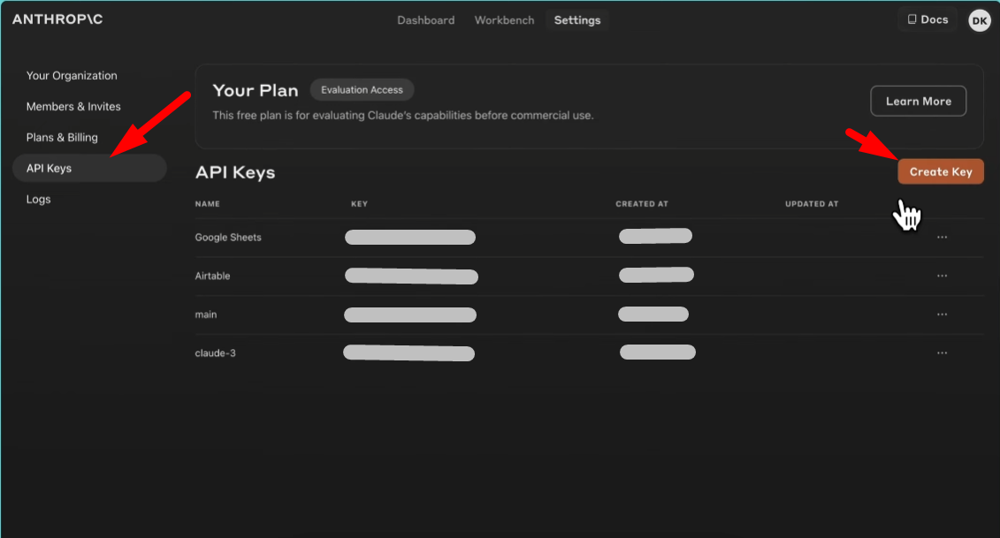
Chave 2: OpenAI (Whisper)
- Acesse platform.openai.com
- Crie uma conta ou faça login
- Clique em API Keys no menu
- Clique em Create new secret key
- Adicione um nome (ex: 'mega-brain')
- Copie a chave e guarde -- ela também NÃO vai aparecer novamente
- Adicione crédito em Billing > Add payment method (consulte os valores na plataforma)
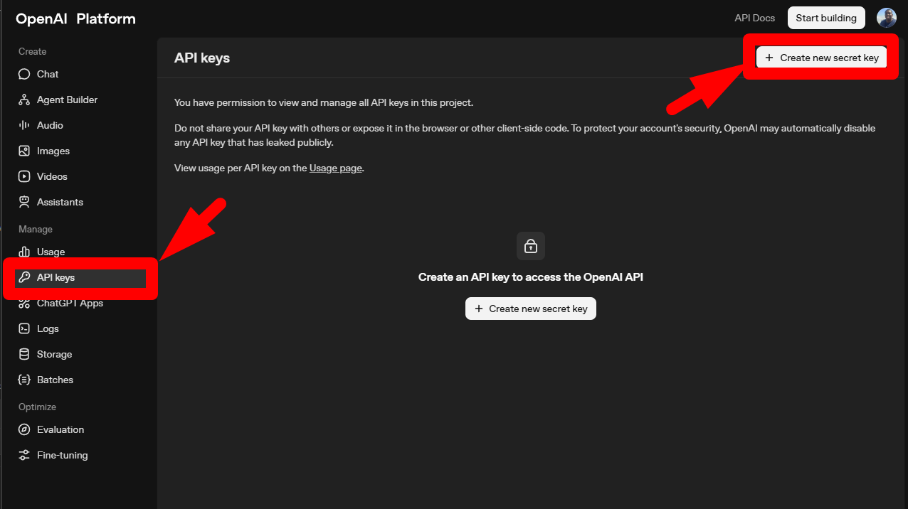
Como verificar
Você deve ter duas chaves copiadas e guardadas:
- ANTHROPIC_API_KEY (começa com 'sk-ant-...')
- OPENAI_API_KEY (começa com 'sk-...')
Você vai usar essas duas chaves na próxima etapa.
Não tenho cartão de crédito internacional
A Anthropic aceita cartões nacionais (Visa/Mastercard). A OpenAI pode exigir cartão internacional -- neste caso, um cartão pré-pago internacional resolve.
A chave já sumiu antes de copiar
Você precisará criar uma nova chave. Clique em 'Create Key' novamente e desta vez copie imediatamente.
Não sei onde colocar a chave agora
Você NÃO precisa usar as chaves agora. Guarde em um bloco de notas. Vamos usá-las na próxima etapa.
Etapa 7: Configurar o Mega Brain
- Etapa 5: Mega Brain baixado
- Etapa 6: API Keys obtidas
Passo 1: Instalar as Dependências
No terminal do VS Code, certifique-se de que você está dentro da pasta mega-brain. O terminal deve mostrar algo como /mega-brain$ no final da linha.
Digite o comando abaixo e pressione Enter:
npm install
Este comando baixa todas as peças que o Mega Brain precisa para funcionar. Pode levar de 1 a 3 minutos. Você vai ver muitas mensagens passando -- isso é normal.
Se deu certo
Se aparecer isso
Passo 2: Rodar o Assistente de Configuração
Agora rode o assistente de configuração:
npx mega-brain-ai setup
O assistente vai fazer perguntas sobre suas API Keys. Para cada pergunta, cole a chave correspondente e pressione Enter.
O que o assistente vai perguntar
- ANTHROPIC_API_KEY: Cole sua chave da Anthropic (começa com
sk-ant-...) e pressione Enter - OPENAI_API_KEY: Cole sua chave da OpenAI (começa com
sk-...) e pressione Enter - Para qualquer outra pergunta opcional: pressione Enter sem digitar nada (aceita o valor padrão)
Como verificar
O assistente deve terminar sem mensagens de erro em vermelho. Você vai ver algo como "Setup complete!" ou "Configuração concluída".
Arquivos de configuração (.env) foram criados na pasta mega-brain.
Se deu certo
Se aparecer isso
npm: command not found
O Node.js não foi instalado corretamente. Volte para a Etapa 3 e reinstale.
ENOENT: no such file or directory package.json
Você não está dentro da pasta mega-brain. No terminal, verifique onde está com pwd (Mac) ou cd (Windows) e navegue até a pasta correta.
ERR_INVALID_API_KEY durante o setup
A chave que você colou está errada ou incompleta. Abra o console.anthropic.com ou platform.openai.com, crie uma nova chave e tente novamente.
npx mega-brain-ai: command not found
Tente rodar npm install -g mega-brain-ai primeiro, depois tente o setup novamente.
Etapa 8: Primeiro Uso -- Validação
- Etapa 7: Mega Brain configurado
Este é o momento de verdade. O comando /jarvis-briefing é como um exame médico para o Mega Brain -- ele verifica cada parte do sistema e te dá um score de 0 a 100.
Abra o Claude Code dentro do VS Code. Ele deve estar no painel lateral ou pode ser aberto pelo menu de extensões.
No campo de chat do Claude Code, digite:
/jarvis-briefing
Aguarde -- o sistema vai analisar sua configuração e retornar um relatório.
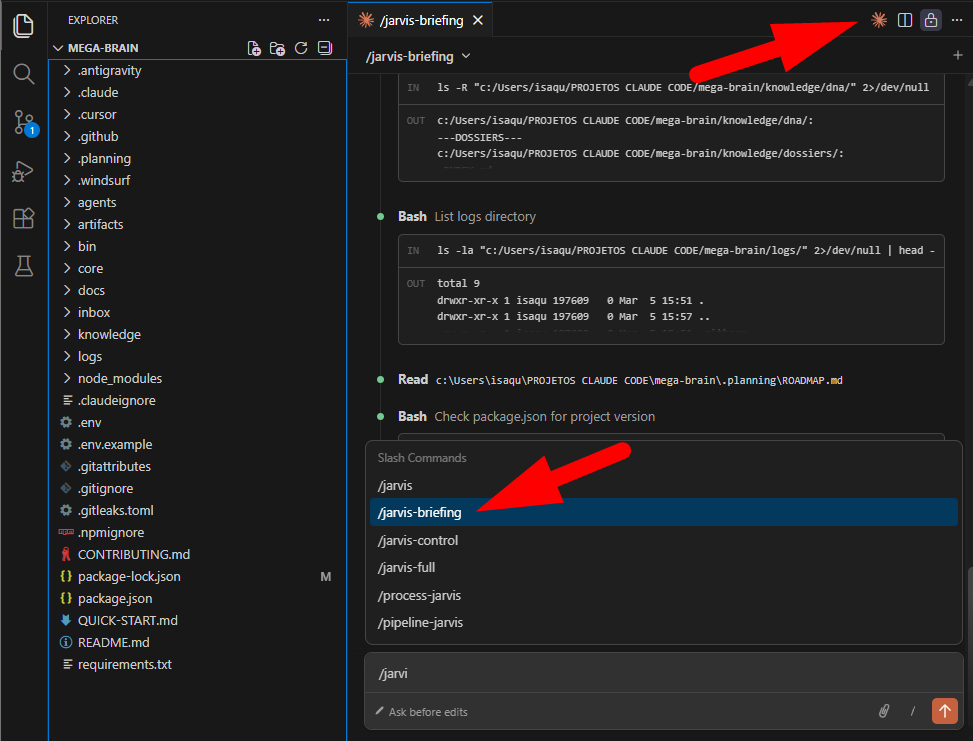
Score 70 a 100 (verde): Tudo funcionando perfeitamente. Você está pronto para usar o Mega Brain.
Score 40 a 69 (amarelo): A maioria funciona, mas algo pode estar faltando. O briefing vai mostrar o que precisa de atenção.
Score abaixo de 40 (vermelho): Algo importante não está configurado. Leia o relatório -- ele explica exatamente o que falta.
/jarvis-briefing não funciona / comando não reconhecido
Certifique-se de que você está digitando no chat do Claude Code (a extensão), não no terminal do VS Code. São janelas diferentes.
Score abaixo de 40
Leia o relatório completo do briefing -- ele lista especificamente o que está faltando. Os problemas mais comuns são API Keys incorretas (volte para Etapa 6) ou npm install não completou (volte para Etapa 7).
O Claude Code não responde
Verifique se sua conta Claude está ativa e com crédito disponível em claude.ai.
Seus Primeiros Comandos no Mega Brain
Agora que tudo está funcionando, experimente esses comandos no Claude Code. Agora é com você!
1. /jarvis-briefing -- Você já conhece! Mostra o diagnóstico completo do seu Mega Brain.
/jarvis-briefing
2. /help -- Lista todos os comandos disponíveis. Explore sem medo.
/help
3. *help -- Mostra os comandos do sistema de agentes (agents do JARVIS).
*help
4. Faça uma pergunta qualquer -- O Mega Brain vai responder usando toda a inteligência do Claude. Teste perguntar algo sobre o seu negócio ou área de atuação.
5. Explore os Agentes -- O Mega Brain tem 37 agentes especializados. Pergunte "quais agentes você tem?" para conhecer todos.
Mega Brain em Outras IDEs
Voce instalou o Mega Brain usando VS Code + Claude Code -- e essa e a forma recomendada para comecar. Mas o Mega Brain tambem funciona em outras IDEs com IA integrada.
- Cursor -- IDE baseada no VS Code com IA nativa. O Mega Brain funciona da mesma forma.
- Google Antigravity -- IDE gratuita do Google com agentes de IA autonomos. O Mega Brain ja tem suporte nativo -- basta abrir a pasta do projeto no Antigravity.
Por agora, o VS Code que voce acabou de configurar e tudo que voce precisa. Quando quiser explorar outras opcoes, o Mega Brain se adapta automaticamente.
Mega Brain Premium
O Mega Brain que você acabou de instalar já é poderoso -- mas existe um nível a mais.
O Mega Brain Premium está sendo desenvolvido com funcionalidades exclusivas para membros que querem extrair o máximo da inteligência artificial no seu negócio.
Em breve, quem estiver dentro terá acesso antecipado a recursos avançados que vão transformar a forma como você trabalha com IA.
Fique atento às novidades. Quem já está dentro, sai na frente.
Etapa 9: GitHub (Opcional)
/jarvis-briefing.Criar sua Conta GitHub
O GitHub é onde os projetos de código ficam guardados na nuvem. Com uma conta, você nunca perde o trabalho que fizer no Mega Brain.
Acesse o site do GitHub para criar sua conta:
Acessar github.com- Acesse github.com e clique em Sign up
- Digite seu email e crie uma senha
- Escolha um username (nome de usuario) -- esse nome vai aparecer nos seus projetos
- Confirme seu email quando chegar a mensagem de confirmação
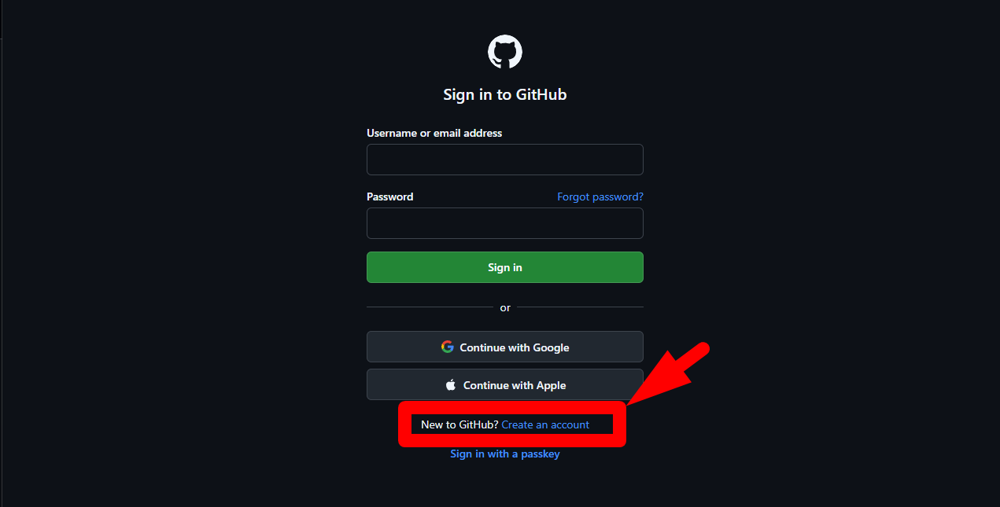
Configurar sua Identidade no Git
Com o terminal do VS Code aberto, configure seu nome e email para o Git:
git config --global user.name "Seu Nome"
Substitua Seu Nome pelo seu nome real.
git config --global user.email "seu@email.com"
Use o mesmo email da sua conta GitHub.
Como verificar
Execute o comando abaixo para conferir que tudo ficou configurado:
git config --list
Você deve ver seu nome (user.name) e email (user.email) na lista.
Não recebi o email de confirmação do GitHub
Verifique a pasta de spam. Se não chegou em 10 minutos, tente se cadastrar novamente.
git config: command not found
O Git não está instalado. Volte para a Etapa 5 e instale o Git primeiro.
Tutorial Concluído
Parabéns! Você completou o tutorial do Mega Brain. Tudo está instalado e configurado.
- ✓ Claude (conta ativa)
- ✓ VS Code + Claude Code
- ✓ Node.js 18+
- ✓ Python 3.10+
- ✓ Mega Brain (clonado e configurado)
- ✓ API Keys (Anthropic + OpenAI)
- ✓ GitHub (conta criada + Git configurado)
Volte ao tutorial quando precisar consultar qualquer etapa.